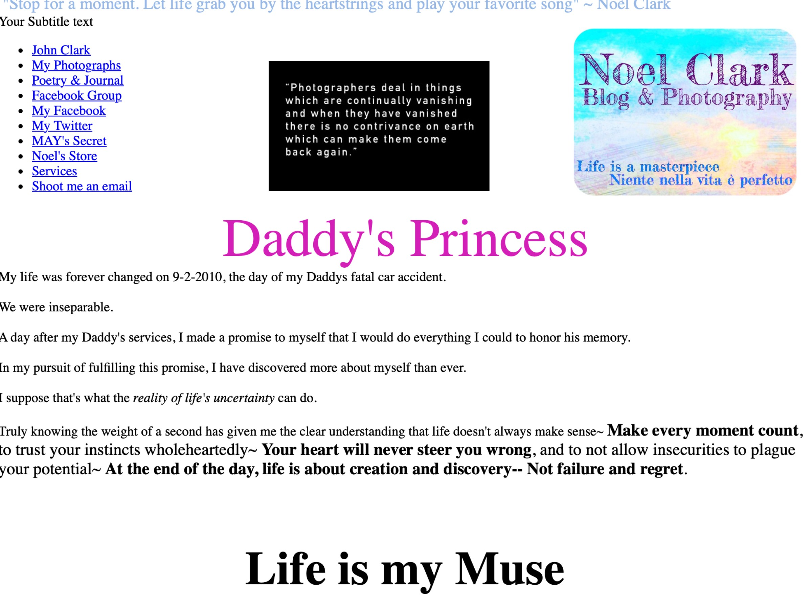

@noelclarkdotcom NOÈL CLARK There was a time when the internet felt like wandering into someone's world... NoelClark.com has been my home on the internet since 2010. It was just me and my open journal... 